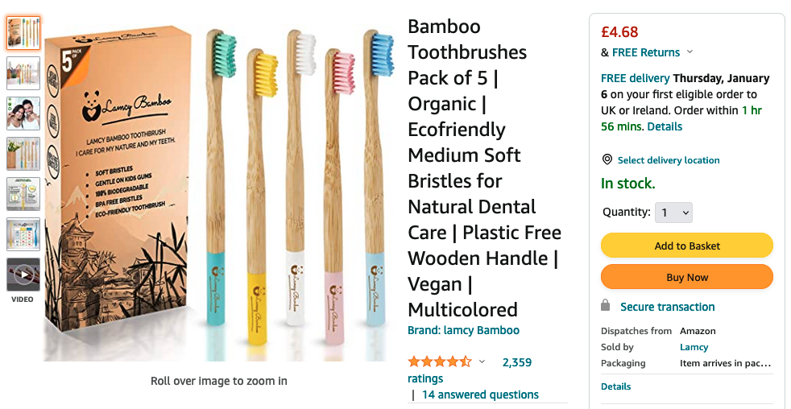
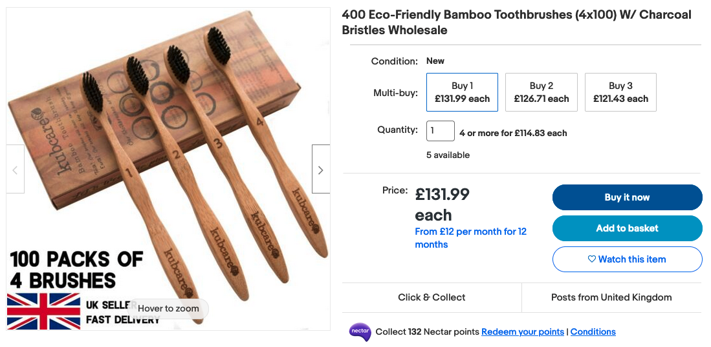

You Should Buy 400 Toothbrushes
Posted on
Economic and sociological arguments
Suppose you are 30 years old. Assuming you use at least 5 toothbrushes each year, you have probably already used over 150 toothbrushes.
Economic
I'm 22 years old. If I live to 90, using 5 toothbrushes each year, I'll use 390 toothbrushes. On Amazon, the going rate seems to be around £1 for a brush.

Whilst £1 for single brush is a relatively mundane price, £390 for 390 brushes is awful if the brushes are purchased at once.
A cursory search reveals wholesale deals like this one, offering 400 brushes for only £132!

Wow! And don't forget about inflation: the CPI inflation rate in the United Kingdom averaged 2.50 percent from 1989 until 2021. You might reasonable guestimate, therefore, a toothbrush purchased in 10 years time might cost you £1.28 compared the £1 you'd buy today.
Buy your lifetime supply of toothbrushes in 1 go, and you'll escape the inevitable march of inflation.
Sociological
Should society collapse, you can be the legend that had the foresight to stock up on the real essential items. Everyone else is stuck with useless electronics that hasn't worked since the initial apocolyptic solar flare. Not only do healthy teeth vastly improve a survivors quality of life: they might even be a useful bartering item, should it come to it.
Even if society remains intact, you can dip into your brush supply to produce a last minute Christmas gift.
If that won't convince you: know this. People would worship you for your toothbrushes.
They'd give you plaques.
But you'd just brush them off.